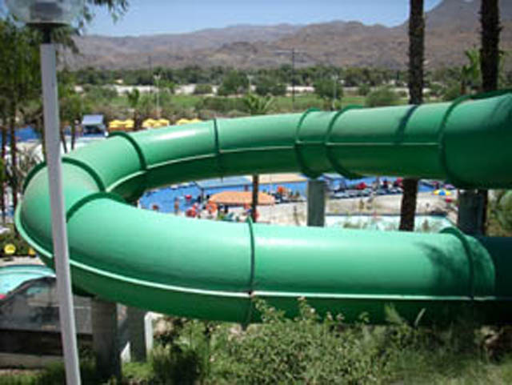
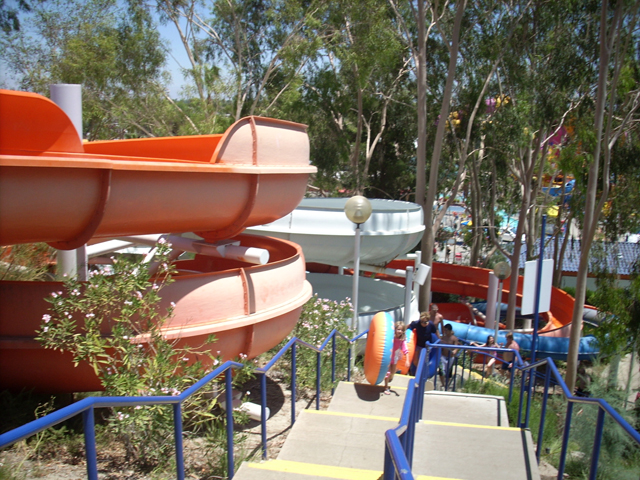

Wet'N'Wild Palm Springs was one of those water parks that you look at and it didn't seem that great. Why are you even sad about a small little water park like this closing? Well, nostalgia and childhood memories. Yeah. Thanks to that, I have a real soft spot for this park and am sad that it's gone when I wouldn't give a f*ck about a similar water park closing elsewhere. I remember when I first began coming, it was the Oasis Water Park way back then. I remember back in 2001 when it became a Cedar Fair Waterpark. I remember the transition from the black and white Oasis Water Park to the colorful Soak City Palm Springs. While it may be a tiny park far from the other big California Parks (Palm Springs is really nice, but...it's not close to the other SoCal Parks), I have a lot of memories here. I have far more memories of this place then I do of my local water pak, Six Flags Hurricane Harbor. I really enjoyed the few slides they had to offer and the whole atmosphere of the place with the desert nearby. Since my last visit, Cedar Fair sold the water park, and it became Wet'N'Wild Palm Springs in 2014. Well, that didn't last long as 4 years later, the park wound up closing in 2018. That makes me sad. I know that makes me a hypocrite since I last visited the park in 2007, and the thought of me going back didn't even cross my mind until early 2021, 13.5 years after my last visit, and 3 years after it closed. And it makes perfect logical sense. The water park was out of the way, and there are so many better water parks in California. But....nostalgia hits strong with this park. So learning of its demise makes me sad.
The Major Waterslides
There is a link to a review of all the Major Waterslides that once resided at Wet'N'Wild Palm Springs.
Here are the reviews of all the other water slides that were Wet 'N' Wild Palm Springs. While Wet 'N' Wild Palm Springs was a small waterpark, there were a lot of waterslides I didn't feature in the Major Waterslides Section. The best waterslide at Wet 'N' Wild Palm Springs without an offical review was Sea Snake. Sea Snake was an enclosed tube slide. You went through a lot of turns on the ride. It was a nice fun slide. The pitch black also made it better. They also had the Pipeline Point Tower, which included 3 slides. The best of those slides was Undertow. Undertow was fun because it actually had a little speed and tubes where you can reverse yourself on. Unfortunetly, the speed bumps at the end of the ride really pissed me off. But oh well. The second slide there was Pipeline. Pipeline was not a real fun slide as it was just such a backscratcher. Not to mention it was hot and humid in the tube and it wasn't very fast. But the worst slide of them all was Wipeout. There's slow, boring, and forceless water slides. And then, there's Wipeout. I seriously got stuck multiple times on it. I think it has a blood relation to the Abyss and High Extreme. In addition to those, there was a lot of slides in Kahuna's Beach House. However, 90% of those slides were closed 90% of the time.

Here's the beginning of Sea Snake.

Here's Pipeline Point Tower. The white slide is Undertow, The orange slide is the awful forceless Wipeout, and the blue slide hiding in the bushes is the backscratching Pipeline.
Dining
Here are the reviews of all the resteraunts at Wet 'N' Wild Palm Springs. I've got to be honest. The food here was expensive and standard. Although most places don't have any better food. They pretty much have one food joint and that place serves your typical amusement park crap. I usually just ate lunch in the parking lot when I went there. You can bring whatever you want there. Sunchips are tasty and addicting.
Emily, Stevie, and Celeste eat in Wet 'N' Wild Palm Springs Parking Lot.
Theming and Other Attractions
Here are the reviews of all the other stuff that was at Wet 'N' Wild Palm Springs. Well, aside from pretty colors, there was NO theming at Wet 'N' Wild Palm Springs. If you look around, you'll just see desert everywhere (From the top of Tidal Wave Tower and Surfside Rapids, you could see the Palm Springs Windmills). As far as other attractions, there was just a typical wave pool (I'll discuss this later on) and a simple lazy river. And since my last visit, they seemed to have gotten a Flow Rider. Awesome. However, at a place like Wet 'N' Wild Palm Springs, you can see everything in less than an hour. So if you're staying for 2 hours or longer, I'd reccomend checking out both their lazy river and wave pool.
Wet 'N' Wild Palm Springs Lazy River.
In Conclusion
Wet 'N' Wild Palm Springs was a great waterpark to visit if you're taking a vacation to Palm Springs. OK, that may be the nostalgia goggles talking, but I really enjoyed this park. It may have been a small little water park with not very many slides, but a lot of fun. You could get your speed fix on Tidal Wave Tower, enjoy a just overall fun waterslide on Surf Rider Rapids, or you can just float around in the parks lazy river. And while it was a fun waterpark to visit if you're in Palm Springs, I wouldn't go out of the way to visit this little waterpark. Which explains why I didn't visit between 2008 and 2018, in its last 10 years of life when I could. Speaking of which, I want to actually talk about its death, because this water park death is far more interesting than most. They didn't just tear this place down to build condos like they did with Wild Rivers (A MUCH better water park that sadly was demolished WAY before its time. I'm sad this place closed, but I don't honestly blame them for closing it). So yeah. This place had a lot of owners. Started off independent as the Oasis Water Park (I still have childhood memories of going there when it was that when I was REALLY little). Then it was passed onto Cedar Fair, where it became Soak City Palm Springs. That lasted for 12 years, when CNL (they owned Wet'N'Wild along with some other parks, such as Elitch Gardens, etc.). However, CNL dumped all their theme parks and water parks (This is how Darien Lake returned to Six Flags). Well....I'm not sure who has it now. But....they REALLY want to change it. It's technically just being rennovated, but...it's not gonna be a water park. So as far as I'm concerned, that's them demolishing and replacing the entire park. What's replacing it? Something called the Palm Springs Surf Club. Apparently, the point of this is to basically make it a giant wave pool, and just have people learn to surf. Looks like somebody fell in love with the Flowrider. And....honestly....that kind of sounds cool. Not sure if I'd say better than a water park tainted with rose colored glasses, but....SUCH A BETTER REPLACEMENT THAN MORE F*CKING CONDOS!!! I don't surf (despite my looks), however....I might just check this place out when hanging out with friends who live in Palm Springs.
Tips
*I'd actually check out that surf club. It seems cool.